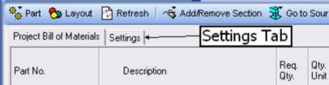
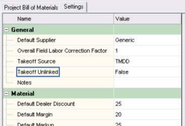

Settings Grid (Project Bill of Materials Window) |
  
|
Settings Grid (Project Bill of Materials Window) |
|
To show the Settings grid, click the Settings tab on the Project Bill of Materials window, as shown below.

That will display the Settings grid, shown below.

General
Default Supplier: Determines the supplier assigned to new parts that you add by clicking the menu "Add Non-Database Part to Section."
Overall Field Labor Correction Factor: Specifies a factor that is multiplied by the hours of field labor of each part in the project bill of materials to determine an adjusted total number of hours used for each part. To set the field labor correction factor for individual ductwork parts, you must set the Field Labor Correction Factor property of the source duct on the drawing.
Takeoff Source: Select whether you want the ductwork takeoff to be made from Graphic Manual D Ductsize ducts that you have drawn on the Drawing Board window, or from ducts you have entered on the Tabular Manual D Ductsize window.
Takeoff Unlinked: If you would like to unlink this project bill of materials from the automatic takeoff, select True. That will make it so any further changes you make to the drawing will not affect the project bill of materials.
Notes: Enter any notes you want to save for this project bill of materials.
Material
Default Dealer Discount: Enter the default dealer discount for materials for this project. The dealer discount is the percentage that the list price is reduced to determine the dealer cost. The value you enter here will be applied to new materials that are added to the database, as well as any non-database parts you add to the project bill of materials. For automatic takeoff ductwork parts, if a part already exists in the database the price data from the database will be used. If you want to see the actual dealer discount for each part turn on the "Matl. Discount" column using the Project Bill of Materials Layout dialog.
Default Margin: Enter the default profit margin for materials for this project. This value is only applied to new materials that are added to the database, as well as any non-database parts you add to the project bill of materials. For automatic takeoff ductwork parts, if a part already exists in the database the price data from the database will be used. If you want to see the actual margin for each part turn on the "Matl. Markup" column using the Project Bill of Materials Layout dialog.
Default Markup: Enter the default markup for materials for this project. This value is only applied to new materials that are added to the database, as well as any non-database parts you add to the project bill of materials. For automatic takeoff ductwork parts, if a part already exists in the database the price data from the database will be used. If you want to see the actual markup for each part turn on the "Matl. Markup" column using the Project Bill of Materials Layout dialog.
Shop Labor Rate, Field Labor Rate
Cost, Sale Price: These inputs define the shop and field labor hourly rates (cost or sale price) for the items in the bill of materials. The rate is multiplied by the number of hours of shop or field labor to determine the labor cost or sale price.
Note that for the labor rate sale price inputs, you can either enter the price directly or enter the labor margin or markup and the sale price will be calculated for you.
Margin, Markup: You can use either the margin or markup to determine the labor sale price, or you can enter the sale price directly and these will be calculated for you.
Taxes
Material Tax Rate, Labor Tax Rate: Enter the material and labor tax rate percentages to be applied to taxable items in this project. For example, if the tax rate is 7.25 percent, enter 7.25 here.
Default for Material Taxable, Labor Taxable: Select whether or not you want new items added to have taxable material and labor. You can always change the taxable status of an item by checking or unchecking the boxes for the appropriate columns. To turn on the Material Taxable and Labor Taxable columns, check the Show Columns checkboxes for them on the Project Bill of Materials Layout dialog.
Section Assignment
Section Name for Ducts, Fittings, and Registers and Grilles: Enter the base name to use for ducts, fittings, or registers and grilles added from the automatic takeoff. For ducts and fittings, if you also select True for any of the options to have separate sections for different materials, shape or gauges, the text you enter here for the base name will be appended as needed.
Separate by Material, Shape and Gauge: Set these inputs to True to create separate sections for different materials for ducts and fittings.